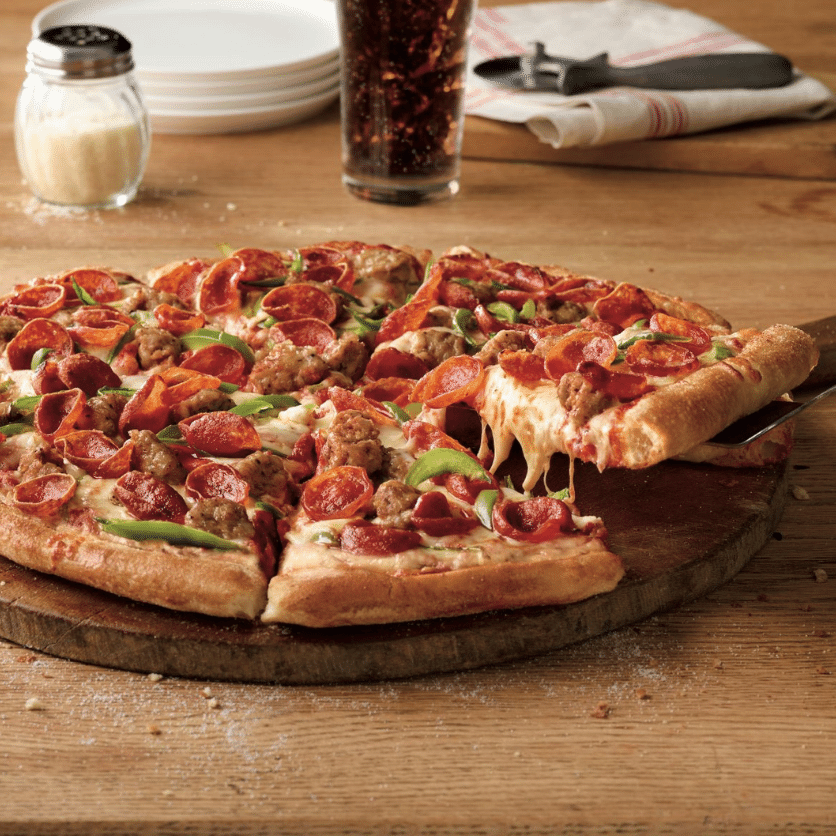

We’re one of the fastest growing pizza brands in America, with over 1,000 pizza franchise locations open. National TV advertising is making us a household name. And we still have plenty of room for new franchisees and multi-unit investors.
DOWNLOAD OUR FRANCHISE INFORMATION REPORT
MARCO'S PIZZA
is one of the fastest growing pizza franchises in America
Over the past decade, the number of the Marco’s Pizza franchises has more than quadrupled. There were 217 locations in 2010, and we opened our 1,000th store in 2020.
MOMENTUM
$1,059,571 AUV*
for the top 50% of franchised stores in 2020
Marco’s franchisees have enjoyed consistent same store sales growth.
*Based on the Average Unit Volume of the top 50% of our Franchised Stores for fiscal year 2020. Based on fiscal year 2020, 142 of 369 Franchised Stores in the category (38%) met or exceeded this average. This information appears in Item 19 of our 2021 FDD – please refer to our FDD for complete information on financial performance. Your results may differ. There is no assurance that you will do as well.
REVENUE
SYSTEMS AND SUPPORT
to help you grow quickly.
We opened our 1,000th store in 2020. That was an impressive milestone. It was also just a start. Marco’s has huge growth potential — now more than ever. We’ve invested in support, technology and marketing to help franchisees operate their units efficiently and manage multiple locations using our state of the art systems.
GROWTH DRIVERS
BUSINESS MODEL
Download the Marco's Business Model eBook
It includes financial performance details, leadership profiles, details about our competitive positioning within the $46 billion pizza industry, and our vision for the future of the brand. Don’t worry – we won’t call until you want us to.
GET THE EBOOK
PROVEN LEADERSHIP
Marco’s executive team has more than 200 years of collective leadership experience in the food service industry. They’ve built great brands before. Marco’s growth is not luck. It’s vision and know-how.
WORLD-CLASS BRAND LEADERS

A $46B INDUSTRY
The pizza industry is huge, stable and growing. Americans spend $46 billion a year on pizza, according to CHD Expert. PMQ Pizza Magazine expects that number to hit $50.7 billion by 2023. According to Food Business News, 30% of Americans eat pizza at least once a week. The amazing numbers don’t stop there.
WHY PIZZA
COVID-19
Has not slowed us down
Though our hearts go out to the many businesses who closed or have been hurt by the pandemic, pizza franchises have thrived. Marco’s has worked very closely with franchisees to adapt to changing business conditions. And while many restaurant concepts have struggled, Marco’s Pizza franchisees nationwide have consistently achieved weekly sales records.
MACRO'S COVID-19 RESPONSE
ITALIAN ROOTS
Has not slowed us down
Fed up with the lack of good-quality pizza delivery franchises, Italian-born Marco’s founder Pat Giammarco sought to create an authentic Italian pizza — an artisan pie created with fresh dough and the highest quality ingredients delivered swiftly to your home.